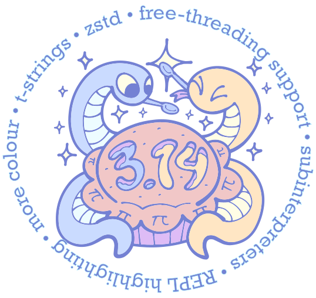

Archive
Bisherige Präsentationen und Themen.
10.03.2026
Paralleles Rechnen in wissenschaftlichen Anwendungen - Ein Fallbeispiel
Mike Müller
Wissenschaftliche Anwendungen lösen oft numerisch anspruchsvolle Probleme. Dies kann zu langen Rechenzeiten führen. Der Vortrag stellte ein Beispiel aus dem Bereich Grundwasser vor. Er zeigte wie sich Rechnungen mit Prozessen und Threads parallelisieren lassen.
10.02.2026
Diskussionsrunde
Wir gaben uns zu aktuellen Python-Themen ausgetauscht.
13.01.2026
MicroPython auf dem ESP32
Thomas Hinterndorfer
MicroPython läuft auf Mikroprozessoren wie ESP32, ESP8266 und RP2040. Der Vortrag zeigte wie sich mit MicroPython Anwendungen auf solchen Prozessoren entwickeln lassen. Neben der Software spielen unterschiedliche Sensoren eine Rolle. Demo-Hardware-Komponenten zeigten was sich alles messen und sonst damit umsetzen lässt.
Wichtige Themen waren:
- Installation
- IDEs
- Beispielkomponenten / Projekte
- Stolpersteine / Abgrenzung zu normalem Python3
- Codebeispiele
9.12.2025
Advent of Code
Der Advent of Code ist ein jährliches Programmierrätsel. Einige von nehmen daran teil. Wir wollen uns zu Lösungen in Python ausgetauscht. Weiterhin gab es eine lebhafte Diskussion zu unterschiedlichen Themen der Nutzung von Python.
11.11.2025
CLT 2026
Wir sind seit vielen Jahren mit einem Stand bei den Chemnitzer Linux-Tagen präsent. Wir wollen auch 2026 wieder dabei sein. In unserem Treffen haben wir unseren Stand geplant. Wir wollen in Python programmierte Spiele präsentieren. Wir wollen einen Mikrocontroller zeigen.
14.10.2025
Python 3.14
Die Python π-Edition ist da!
Diese Version bringt viele neue Features mit sich. Free-threading ist nun offiziell Teil der Sprache. Template-Strings erweitern die Möglichkeiten der beliebten f-Strings.
Neben ThreadPoolExecutor und ProcessPoolExecutor unterstützt
concurrent.futures nun auch den InterpreterPoolExecutor,
der mit Subinterpretern arbeitet.
Die Komprimierung mit dem Format zstd ist jetzt Teil der Standardbibliothek,
und argparse unterstützt ab sofort farbige Ausgaben.
Die Liste der Neuheiten enthält noch viele weitere spannende Highlights – wir haben uns die wichtigsten Features gemeinsam angeschaut!

9. September 2025
MCP-Server mit Python
Das MCP (Model Context Protocol) ist ein Open-Source-Standard, der es KI-Anwendungen wie ChatGPT, Ollama, Gemini oder Claude erlaubt sich mit externen System zu verbinden. So ist zum Beispiel die Suche im lokalen Dateisystem oder die Abfrage einer relationale Datenbank direkt in KI-Chats integrierbar.
Wir haben uns das Konzept eines MCP-Servers angeschaut. Ein kleines Beispiel gat demonstriert wie sich Python-Funktionen aus Claude heraus via MCP aufrufen lassen. Einige hatten schon Erfahrungen mit MCP-Servern und haben diese kurz vorgestellt. Es gab eine rege Diskussion dazu.
12. August 2025
Datenanalyse mit DuckDB
Orell Garten
In den letzten Jahren haben sich neben Pandas neue Tool im Data-Ökosystem etabliert, z.B. Polars und DuckDB. Es gab eine kurze Einführung zu DuckDB, die zeigte welche Möglichkeiten sich dadurch für Datenanalyse und Datenprodukte ergeben. Eine Live-Demo hat typische Anwendungsfälle gezeigt.
PyCamp Leipzig 2025
28. und 29. Juni 2025
Unser Python BarCamp fand am 28. und 29. Juni 2025 im Basislager in Leipzig statt. Ein BarCamp ist eine sehr produktive Veranstaltung mit vielen Diskussionen und regem Gedankenaustausch. Alle wirken mit. Die aktive Teilnahme ergibt sich von ganz allein.
Es gab zahlreiche, interessante Sessions zu unterschiedlichsten Themen. Es war ein tolle Veranstaltung. Zwei Tage voller Vorträge und intensiver Diskussionen zu Python-Themen. Die Palette der Teilnehmenden reichte von Python-Einsteigern bis zu sehr erfahrenen Entwicklern. Das Feedback war eindeutig: Alle haben etwas Neues gelernt. Alle waren aktiv dabei. Wir planen auch für 2026 ein Python BarCamp in Leipzig.
11. Juni 2025
Unser Python BarCamp
Unser BarCamp findet in ein paar Tage nach dem Treffen statt. Wir haben uns mit dem Themen BarCamp beschäftigt. Unsere Diskussionsthemen:
- Was ist ein BarCamp?
- Wie unterscheidet es sich von einer Konferenz?
- Warum nehmen manche Teilnehmende mehr mit als von einer Konferenz?
13. Mai 2025
Diskussionsrunde
Wir haben uns zu aktuellen Python-Themen ausgetauscht.
8. April 2025
Learnings from migrating a Flask app to FastAPI
Orell Garten
Seit seinem Erscheinen 2018 hat sich FastAPi schnell zu einer etablierten Lösung für HTTP-APIs in Python entwickelt. Der Vortrag hat die Erfahrungen einer Migration einer HTTP-API von Flask nach FastAPI zusammengefasst. Wichtige Punkte sind:
- Wieso überhaupt migrieren?
- Datenmodellierung als Grundkonzept
- Probleme, die auftreten werden
Der Vortrag war eine Kurzform des Vortrags auf der PyConDE.
11. März 2025
Diskussionsrunde
Wir haben uns zu verschiedenen, aktuellen Python-Themen ausgetauscht. Ein zentrales Thema war die asynchrone Programmierung, wie sie funktioniert und für welche Anwendungsfälle es nützlich ist.
11. Februar 2025
Erfahrungsaustausch - Statische Typisierung in Python
Python ist eine dynamisch getypte Sprache. Das wird auch so bleiben. Die Möglichkeiten statische Typen als Hinweise in den Code aufzunehmen wachsen mit jeder Python-Version. So bietet Python 3.12 syntaktische Vereinfachungen, die die Nutzung von Typ-Hinweisen um Einiges angenehmer machen. Wir haben uns zu diesem Thema ausgetauscht und unter anderem diese Fragen erörtert:
- Wer nutzt Typisierung für welche Projekte?
- Lohnt sich der Aufwand im Vergleich zum Nutzen?
- Wo hat es gut geklappt?
- Wo war Typisierung eher im Weg?
14. Januar 2025
Parallele Erstellung von Animationen mit Matplotlib und FFmpeg
Mike Müller
Ein Bild sagt mehr als 1000 Worte. Wenn sich die abgebildeten Informationen über die Zeit häufig ändern können viele Bilder entstehen. Eine Animation kann hier oft helfen. Die Bilder laufen dabei wie in einem Film nacheinander ab und zeigen den zeitlichen Verlauf. * Wir haben uns dazu ausgetauscht wie sich mit Matplotlib viele Bilder erzeugen und im Folgeschritt mit FFmpeg zu einem Video zusammensetzen lassen. Da dabei viele Bilder und ggf. auch viele Videos entstehen können, ist es meist möglich die Bilder- und Videoerzeugung zu parallelisieren. Wir haben uns angeschaut welche Möglichkeiten Python dafür bietet und was deren Vor- und Nachteile sind.
* Das gleiche Prinzip funktioniert natürlich auch für räumliche oder andere Änderungen der Darstellung.
10. Dezember 2024
Advent of Code mit Python
Wir haben uns mit dem Advent of Code auf Weihnachten einstimmen. Dabei haben wir alternative und möglichst pythonic Lösungen besprochen.
CLT 2025
Die Chemnitzer Linux-Tage finden am 22. und 23. März 2025 statt. Wir sind dort regelmäßig mit einem Stand vertreten. Das soll auch nächstes Jahr so sein. Der Anmeldeschluss war der 8. Januar 2025. Da dieser vor unserem nächsten Treffen lag, haben wir die Organisation geplant.
12. November 2024
Python 3.13 - Grundsätzliche Neuerungen
Anfang Oktober diesen Jahres ist Python 3.13 erschienen. Es enthält viel Neues, u.a.:
- Der Interpreter bietet wesentlich verbesserte Editier-Möglichkeiten und farbige Ausgaben.
- Eine experimentelle Python-Version arbeitet ohne Global Interpreter Lock (GIL).
- Ein optionaler JIT-Compilers öffnet den Weg für Performance-Verbesserungen.
- Viele alte, lange abgekündigte, Module sind aus der Standard-Bibliothek verschwunden.
- iOS und Android sind jetzt offiziell unterstützte Plattformen.
- Zahlreiche Module der Standard-Bibliothek haben neue Funktionalität erhalten.
Wir haben uns diese Neuerungen angeschaut und diskutiert wie sie sich am Besten nutzen lassen.
8. Oktober 2024
Pydantic - Daten effektiv validieren
Pydantic ist die wohl meist verwendete Bibliothek zum Validieren von Daten in Python. Wir haben uns angeschaut wie Pydantic funktioniert und für welche Anwendungen es gut geeignet ist. Pydantic ist in Rust implementiert und daher sehr schnell. Type hints definieren die Regeln zum Validieren der Daten und erlauben die Anpassung an eigene Bedürfnisse. Pydantic kann JSON Schema erzeugen, die bei der Integration in andere Systeme helfen können.
10. September 2024
Free-Threaded-Python - Python 3.13 ohne GIL - Teil 2
Mike Müller
Bei unserem letzten Treffen hatten wir uns mit den neuen Möglichkeiten von Python 3.13 für die Thread-Programmierung beschäftigt. Es gab viele Anregungen zu weiteren Untersuchungen dazu. Daher haben wir dieses Thema fortgesetzt und uns insbesondere mit der Messung der Nutzung von mehreren CPUs beschäftigt.
13. August 2024
Free-Threaded-Python - Python 3.13 ohne GIL
Mike Müller
Python 3.13 bietet eine experimentelle Variante, die kein Global Interpreter Lock (GIL) hat. Damit können Threads auch CPU-limitierte Programme schneller ausführen.
Der Vortrag erläuterte die grundsätzlichen Möglichkeiten der parallelen und nebenläufigen Programmierung. Nach einem Überblick einiger Werkzeuge die Python für die parallele Programmierung bietet, zeigte der Vortrag ein Beispiel der Arbeit mit Threads und Prozessen. Wir haben uns die Laufzeit-Unterschiede zwischen Python 3.12 und 3.13 sowie der neuen Free-Threaded Version von Python 3.13 angeschaut.
9. Juli 2024
Diskussionsrunde
Wir uns über aktuelle Entwicklungen im Python-Ökosystem ausgetauscht.
11. Juni 2024
PyCon US 2024 - Die größte Python-Konferenz
Mike Müller
Im Mai 2024 fand die PyCon US in Pittsburgh, PA statt. Mike Müller war dabei. Er hat seine Eindrücke von der PyCon vorgestellt. Neben einem Überblick über den Ablauf und zu den Inhalten von aus seiner Sicht interessanten Vorträgen hat er über das Besondere dieser Konferenz berichtet.
14. Mai 2024
Diskussionsrunde
Wir haben uns zu den aktuellen Entwicklungen im Python-Ökosystem ausgetauscht. Die Version 3.13 steht vor der Tür. Die Möglichkeit das GIL auszuschalten und der JIT sind sicher zwei Highlights dieser Version.
9. April 2024
Python als Nutzerschnittstelle für wissenschaftliche Software
Mike Müller
Wissenschaftler nutzen oft sehr spezielle Software, die von andere Wissenschaftlern entwickelt haben. Der Aufwand ein grafische Nutzerschnittstelle (Graphical User Interface GUI) für derartige Anwendungen zur erstellen und dann immer an die häufigen Änderungen der Software unverhältnismäßig ist häufig unverhältnismäßig hoch. Als Alternative kann eine API (Application Programming Interface) als Nutzerschnittstelle dienen.
Der Vortrag hat diesen Ansatz für eine Simulationssoftware für die Modellierung der Wasserbeschaffenheit von Bergbaurestseen vorgestellt. Die Zielgruppe für diese Software ist sehr klein. Gleichzeitig ist die Funktionalität sehr umfangreich, um die komplexen fachlichen Problem zu lösen. Nach der Vorstellung von typischen Arbeitsabläufen stellte der Vortrag die Erfahrungen mit Nutzern vor, die wenig oder gar nicht programmieren.
12. März 2024
System- und Integrationstests von Telematikgeräten mit Hilfe von pytest
René Liebscher
Bei Tests mit pytest denkt man meist an Software. Aber auch Hardware lässt sich damit testen. Dieser Vortrag eine Anwendung dazu vorgestellt.
Das sind die Vortragsinhalte:
- Vorstellung der Geräte und externer Anschlussmöglichkeiten
- Übersicht Gesamtsystem
- Testaufbau (HW Ansteuerung)
- Testautomatisierung (pytest, Jenkins)
13. Februar 2024
GUI-Programme im Terminal
Textual macht es leicht GUI-Programme im Terminal umzusetzen. Solche Programme bezeichnet man auch als TUI (text user interface). Die Programmierung ähnelt der von Anwendungen mit anderen GUI-Toolkits wie Qt for Python oder Tkinter. Wir haben uns angesehen wie Textual funktioniert und welche Anwendungen sich damit gut umsetzten lassen.
9. Januar 2024
Heizkörper mit Python fernsteuern
Andre Bunk
Vergessen die Heizung abzudrehen? Mit einem kleinen Python-Programm geht das auch remote. Der Vortrag eine Lösung dafür vorgestellt. Ein auf Flask basierter Webserver, der auf einem Odroid läuft stellt, über FritzConnection eine Verbindung zu einem AVM Router her. Dort legt dieser die Heizungssteuerdaten ab, die die Fritzbox über DECT an den AVM-Thermostat überträgt.
12. Dezember 2023
Konstanten mit Enum thematisch zusammenfassen
Mike Müller
Die Standardbibliothek bietet viele Module für unterschiedlichste Aufgaben.
Ein interessantes Modul ist enum, das unter anderem die Klasse Enum
enthält.
Mit Enum lassen sich thematisch zusammengehörige Konstanten zusammenfassen
und organisieren.
Oft haben diese Konstanten eine inhaltlich begründet Reihenfolge.
Typische Beispiele sind die Wochentage von Montag bis Sonntag, die Monate eines
Jahres, die HTTP-Status-Codes wie 200 für OK, 404 für NOT_FOUND und 500 für
SERVER_ERROR oder die Himmelsrichtungen wie Nord, Süd, Ost und West.
Wir haben uns ein paar Anwendungsbeispiel angeschaut. Dabei haben wir Fragen wie:
- Welche Vorteile bietet die Nutzung von
Enum? - Welche Varianten gibt es und für welche Zwecke eignen sich diese?
- Was sind potentielle Fehlerquellen und wie lassen sich diese vermeiden?
beantwortet.
Unser Stand auf den Chemnitzer Linux-Tagen
Der Call for Presentations der Chemnitzer Linux-Tage ist raus. Wir hatten in den letzten Jahren immer einer Stand. Auch 2024 sollten wir wieder dabei sein. Der Anmeldeschluss ist der 08.01.2024. Da dieses Datum vor unserem nächsten Treffen ist, haben wir in diesem Treffen entschieden wieder teilzunehmen. Für Standbetreuer ist die Teilnahme kostenlos. Außerdem gibt es eine durchgehende Pausenversorgung mit Speisen und Getränken sowie die Möglichkeit der Teilnahme an der Samstagsabendveranstaltung der ORGA mit Kulturprogramm und umfangreichen Buffet. Der Betreuungsaufwand ist übersichtlich. Wir müssen den Stand nur mit mindestens einer Person durchgängig besetzten. Je mehr Betreuer wir haben, desto weniger Zeit am Stand pro Person ist nötig. Es gibt also durchaus Gelegenheit sich einige Vorträge anzusehen.
14. November 2023
Plone - Content Management mit Python
Manuel Reinhardt
Plone ist ein Open Source Content Management System (CMS), das in Python geschrieben ist. Es wirbt mit Stabilität, Sicherheit und Erweiterbarkeit. Manuel arbeitet seit bald 15 Jahren überwiegend mit Plone. Er gab einen kleinen Einblick, was Plone kann und für wen es geeignet ist. Weiterhin zeigte er die wichtigsten Features und umriss die Entwicklung von Add-Ons.
10. Oktober 2023
Python 3.12
Pünktlich zum 2. Oktober ist Python 3.12 erschienen.
Wir haben uns ansehen was die neue Version bringt.
Python ist wieder etwas schneller geworden.
Die so beliebten f-Strings sind noch anwenderfreundlicher geworden.
Beliebig tiefe Verschachtelungen und mehrzeilige Ausdrücke können recht
nützlich sein.
Das Aufräumen geht auch weiter. Einige Uralt-Module sind verschwunden oder
werden explizit als bald nicht mehr unterstützt gekennzeichnet.
Viele weitere, kleine Verbesserungen können hier und da hilfreich sein.
Lohnt sich ein schneller Umstieg?
Wir haben versucht diese Frage in unserem Treffen zu beantworten.
12. September 2023
Datenbankzugriff mit Python
Die Arbeit mit relationalen Datenbanken ist eine typische Aufgabe beim Programmieren. Wir haben uns darüber ausgetauscht wie sich diese Aufgabe mit Python umsetzten lässt. Zu den Fragen die wir beantwortet haben gehören zum Beispiel: Welche Bibliotheken sind dafür geeignet? Wie viel SQL muss man beherrschen, um sinnvoll mit Datenbanken in Python zu arbeiten? Reicht SQLite für meine Bedürfnisse?
8. August 2023
Bericht vom PyCamp
Unser Python BarCamp fand am 29. und 30. Juli 2023 im Basislager in Leipzig statt. Es war ein voller Erfolg. Ein paar von uns waren dabei. Wir haben einen kurzen Überblick über den Ablauf und die Themen gegeben. Wer nicht teilnehmen konnte bekam damit eine Zusammenfassung. Das motiviert vielleicht beim nächsten Mal dabei zu sein.
29. und 30. Juli 2023
PyCamp Leipzig
Unser Python BarCamp fand am 29. und 30. Juli 2023 im Basislager in Leipzig statt. Es war ein voller Erfolg. Interessante Themen und tiefe Diskussionen haben die Veranstaltung geprägt. In zwei Tagen haben alle Beteiligten viel Neues gelernt.
11. Juli 2023
Paketierung und Distribution für Python-Nutzer
Jannis Leidel
Der Vortrag hat interessante Aspekte aus diesem Gebiet beleuchtet:
Wie hat sich das Python Package Management in den letzten 15 Jahre entwickelt? Wie könnte es in den kommenden Jahren weitergehen und welche Themen sind im Moment besonders im Entwicklungsfokus? Ich werde einige Bespiele aus den den PyPA und conda Communitys zeigen und Euren Fragen Rede und Antwort stehen. Die Slides geben einen Überblick über die Vortragsinhalte.
Der Vortragende
Jannis Leidel ist der derzeitige Lead-conda-Entwickler.
Er hat maßgeblich an pip mitgearbeitet und ist ein Mitgründer der
Python Packaging Authority (PyPA).
13. Juni 2023
Freie Diskussionsrunde
Wir haben über verschiedenste aktuelle Python-Themen diskutiert.
9. Mai 2023
Python und Rust
Eine Diskussionsrunde
Die Programmiersprache Rust ist noch relativ jung. Sie wurde im Jahr 2010 veröffentlicht und die erste stabile Version erschien 2015. Verglichen mit dem mehr als 30 Jahre altem "erwachsenem" Python ist Rust also noch ein "Kind". 😉 Trotzdem gibt es schon viele Projekte, die Rust nutzen. So ist Rust seit Version 6.1 des Linux Kernel eine offizielle Programmiersprache für Linux.
Auch für Python-Nutzer is Rust relevant. Das sind ein paar Beispiele für Python-Werkzeuge, die in Rust implementiert sind:
- der sehr schnelle Python-Linter ruff
- das neue Python-Installations- und Management-Tool rye
- der "Conda-Ersatz" rattler
- die Bibliothek Py03 zum Erstellen von Python-Erweiterungen in Rust und zum Einbetten von Python in Rust-Programme
- das Paketier-Werkzeug PyOxidizer zum Erstellen einer binären Datei, die ein Python-Programm enthält
Wir haben diskutiert welche Auswirkungen Rust auf Python und dessen Nutzung hat. Interessante Fragen für unsere Diskussion waren:
- Wer hat Erfahrung mit auf Rust basierenden Werkzeugen für Python?
- Wer hat mit Rust programmiert oder erwägt sich mit Rust zu befassen?
- Wie ist das Aufwand-Nutzen-Verhältnis von Rust im Vergleich mit anderen Sprachen wie C oder C++, die aus Python-Sicht häufig ähnliche Anwendungsfälle abdecken?
Stefan Schwarzer hat wichtige Merkmal von Rust mit einem Beispiel kurz dargestellt. In seiner Vorstellung von Rust hat er diese Links empfohlen:
- Rust website
- Installation am besten mit Rustup
- Rust book oder hier
- Rust container cheat sheet
- Rust by example
- Rust playground
- Rustlings (Übungsaufgaben)
- Paket-Index (entspricht etwa PyPI) oder hier
- Ausgewählte/empfohlene Pakete
- Rust REPL
- Jupyter-Integration
- Rust Analyzer (Language Server)
- Rust performance book Die Performance ist aber normalerweise "schon so" sehr gut. Das Buch ist eher dafür da, wenn man noch mehr tunen will. 😄
11. April 2023
Wie entsteht eine Python-Konferenz?
Benjamin Schott
Wie kommt eigentlich die PyCon DE oder die EuroSciPy zustande? Wer organisiert diese Konferenzen? Der Vortrag zeigte aus der Sicht eines an der Organisation einer Python-Konferenz beteiligten zeige wie diese ehrenamtlich durchgeführten Veranstaltungen erfolgreich sein können.
14. März 2023
Nachlese Chemnitzer Linux-Tage
Wir hatten einen Stand auf den Chemnitzer Linux-Tagen (CLT) am 11 und 12. März. Drei von uns waren als Standbetreuer dabei. Wir haben kurz berichtet was es Neues aus regionalen Open-Source-Community gibt.
Auf den CLT gibt es viele interessante Vorträge und Workshops, die sicher die Reise nach Chemnitz wert sind.
14. Februar 2023
Programmieren lassen - Erfahrungen mit ChatGPT
Katharina Ni
ChatGPT ist ein nützliches Werkzeug für Python-Programmieranfänger, das unter anderem hilft, Fehler in im Code zu finden, Boilerplate-Code und Musterdaten zu erzeugen und Hilfe zu erhalten, wenn man den Wald vor lauter Bäumen nicht mehr sieht. Es sollte jedoch nicht verwendet werden, um Programmieren zu lernen oder Code zu generieren, der eine Menge Kontext erfordert.
Wir haben uns interessante Beispiele angesehen. ChatGPT ist beindruckend macht aber auch "dumme" Fehler, die manchmal nicht im Verhältnis zur eigentlich soliden Lösung stehen.
10. Januar 2023
Python 3.11 - Bis zu 60 % schneller
Seit ein paar Monaten ist 3.11 verfügbar. Wir haben uns ansehen was es Neues gibt. Das Projekt Faster CPython hat Python 3.11 signifikant schneller gemacht. Wir haben uns ansehen was das bedeutet. Auch andere Feature wie verbesserte Ausnahmen und mehr Möglichkeiten beim Typing sind interessant.
13. Dezember 2022
Viele Messwerte mit Python sinnvoll darstellen
Andre Bunk
In unserem Treffen im Juli 2020 hatte Andre seine Temperatur-Messung mit einem Odroid-Kleincomputer vorgestellt. In den vergangen fast 3 Jahren sind über 1 Million Messwert angefallen. Die Software mit Sqlite, pandas, SciPy und Dash läuft zuverlässig. Allerdings wird die Darstellung bedingt durch die vielen Werte immer unübersichtlicher. Wir haben uns ansehen welche Möglichkeiten es gibt trotz der vielen Werte die Darstellung übersichtlich und informativ zu gestalten. Als Lösung bietet sich die Berechnung von stündlichen Mittelwerten sowie die Gruppierung nach Stunden an. Das Werkzeug der Wahl dafür ist sicherlich pandas, dass schon im Einsatz ist.
8. November 2022
Gradual Typing in Python
Martin Czygan
Being a dynamic language first, Python approaches type safety in a different, gradual way. In this talk, we looked at the broad picture of typing in Python, its history and a bit of theory behind the implementation as well. We'll also saw how typing can improve code quality.
11. Oktober 2022
Modernes Matplotlib
Mike Müller
Matplotlib ist die wahrscheinlich die meist genutzte Plotting-Bibliothek in Python. Matplotlib unterstützt viele verschiedene Plots und biete ein große Palette von Konfigurationsmöglichkeiten. Die erste Version ist 2003 erschienen. Nach fast 20 Jahren Entwicklungszeit haben sich aber auch viele Konzepte überlebt. Deshalb hat Matplotlib teilweise den Ruf "altbacken" und umständlich nutzbar zu sein. Das muss aber nicht sein. Matplotlib kann durchaus mit anderen, neueren Plot-Bibliotheken mithalten. Der Vortrag Effectively using matplotlib auf der EuroSciPy 2022 gab dazu einen guten Überblick. Aufbauend darauf haben wir uns angeschaut an wie modernes Matplotlib funktioniert. Wer Matplotlib noch nicht kannte, konnte die grundlegende Merkmale kennenlernen. Wer Matplotlib schon nutzte konnte sicher auch ein paar neue Tricks mitnehmen, die die Arbeit mit dieser Bibliothek erleichtern und näher an die Workflows anderer Bibliotheken bringen.
13. September 2022
Cross-kompilieren für CPU und GPU mit Numba, oder: Python für Haskell-Liebhaber
Sebastian Ernst
Das Python-Paket numba bietet einen Just-in-Time-Compiler für (C)Python über verschiedene APIs für verschiedene Programmierparadigma an. Besonders interessant für mich waren dabei vectorize und guvectorize, welche in der Lage sind, "numpy-ufuncs" bzw. so genannte "generalisierte ufuncs" zu bauen. Beide Funktionen erlauben das Compilieren ein und des selben Python-Codes für verschiedene Targets, u.a. (x86) CPUs und (Nvidia) GPUs. Der Vortrag zeigte was es dabei alles so zu entdecken gibt und in welche tiefen Löcher man dabei so fallen kann.
9. August 2022
Digitale Probanden-Einwilligung mit Django
Gefan Qian
Der Vortrag hat den aktuellen Stand einer Django-Anwendung vorgestellt, die Daten von Probanden verarbeitet. Im ersten Schritt müssen die Probanden der Verarbeitung ihrer Daten einwilligen. Die Texte der Probanden-Einwilligung stellt die Anwendung dynamisch aus individualisierten Textbausteinen zusammen. Der Proband kann dieser Einwilligung in Form einer Unterschrift per Maus zustimmen. Danach erzeugt die Anwendung die unterschriebene Aufklärung im PDF-Format und zeigt diese im Bowser an.
Wir haben gemeinsam am Code gearbeitet. Dabei konnten wir einen URL-Endpunkt entfernen und die Funktionalität durch einen existierenden Template-Filter ersetzen. Damit hat sich Anzahl der Code-Zeilen beträchtlich reduziert und die Anwendung ist einfacher geworden.
12. Juli 2022
Diskussionsrunde
Wir haben uns über aktuelle Python-Themen ausgetauscht.
14. Juni 2022
Python im Browser
PyScript & Co. - Python im Browser
Eine Keynote der PyCon US hat PyScript vorgestellt. PyScript läuft im Browser und kann Javascript vollständig ersetzen. Es basiert auf Pyodide, das CPython auf WebAssembly/Emscripten laufen lässt. Auf der PyScript Seite gibt es es gibt ein paar schöne Beispiele. Wir haben uns diese näher ansehen.
10. Mai 2022
Pandas-Alternativen
Ein Erfahrungsaustausch
Die Bibliothek pandas ist in der Datenanalyse weit verbreitet. Es gibt eine Reihe von Bibliotheken, die sich an die Funktionsweise, also die API von pandas anlehnen und eine Alternative darstellen können. Weiterhin gibt es Systeme mit pandas-artiger Schnittstelle, die damit im Idealfall den Einarbeitungsaufwand auf Null minimieren. Wir haben uns einige dieser Systeme wie:
- Dask - parallele und verteile Ausführung von beliebigen Python-Programmen mit leichter Anwendung auf pandas
- PandaPy - pandas-Alternative basierend auf dem "structured NumPy datatype", schneller für kleinere DataFrames
- xarray - "pandas für mehr dimensionale Daten"
- Modin - parallele Ausführung von pandas-Code, nutzt Dask oder andere Systeme
- Datatable - pandas-ähnlich für parallele Datenverarbeitung mit "out-of-memory datasets"
- Polars - schnelle, in Rust implementierte DataFrame-Bibliothek basierend auf dem Apache Arrow Columnar Format
- Vaex performance-orientierte pandas-artige Bibliothek mit memory mapping und lazy computations
- Pyspark - Python-Schnittstelle zu Apache mit pandas-artiger API
- Koalas - pandas-API für Apache Spark
- cuDF - GPU DataFrames basierend auf dem Apache Arrow Columnar Format
- viele weitere ...
kurz angesehen und uns über unsere Erfahrungen zu Vor- und Nachteile dieser Systeme ausgetauscht.
12. April 2022
Offene Diskussionsrunde
8. März 2022
Metadaten-GUI - Teil 2
Gefan Qian
In unserem Treffen im Januar hatte Gefan sein Projekt über eine dynamisch erzeugte Nutzeroberfläche für Konfigurationsdaten vorgestellt. Es gab Einiges an Feedback mit Änderungsvorschlägen. Das sind die wichtigsten Änderungen in der neuen Version:
- Nutzung von Klassen
- keine globalen Variablen mehr
Es gab noch diese offenen Punkte:
- Wie lässt sich Eventhandling bei voneinander separaten, aber dynamisch erstellten Entry-Feldern umsetzen?
- Wie lassen sich mit
pip installTextdateien beim installierenden Nutzer in einem bestimmten Verzeichnis ablegen? - Wieso ist trotz Benutzung verschachtelter grids das Layout ungleichmäßig?
8. Februar 2022,
Auswertung PyCamp
Unser PyCamp Ende Januar ist gelaufen. Wir haben kurz ausgewertet welche Themen wir dort diskutiert hatten. Einige das Konzept eines BarCamps noch nicht und konnten mehr darüber lernen warum es viele Teilnehmer als sehr produktives Format empfinden.
11. Januar 2022
Metadaten-GUI - Eine dynamisch erzeugte Nutzeroberfläche für Konfigurationsdaten
Gefan Qian
Der Vortrag stellte ein Programm vor, das anhand einer JSON-Datei eine GUI mit den jeweiligen Elementen generiert. Diese JSON-Datei ist eine manuell geschriebene Konfigurationsdatei. Die TKinter-GUI erzeugt anhand der Konfigurationsdaten dynamisch Elemente wie Checkbox, Dropdown-Menü, Selectbox oder Kalender. Dabei bestimmen die Konfigurationsdaten die Anzahl und Reihenfolge dieser GUI-Elemente.
In Zukunft soll ein weiteres Werkzeug Konfigurationsdateien über ein GUI erzeugen können. Wir wollen diskutieren wie sich das grundsätzlich umsetzen lässt.
14. Dezember 2021
Django-Admin - Ein mächtiges Werkzeug für Django-Apps und andere Anwendungen
Andreas Bamberger
Der Django-Admin ist ein grafisches User-Interface für Django-Models. Er lässt sich vielseitig anwenden. Typische Anwendungen sind zum Beispiel:
- Konfigurationsschicht für Django-Applikation,
- vollwertiges Frontend für Administrative Aufgaben (wie eineVereinsverwaltung) und
- GUI-Schnittstelle zu Modellen (CRUD) zur vereinfachten Entwicklung komplexerer Applikationen
Der Vortrag hat den Django-Admin und dessen Nutzung vorgestellt.
- Aktivierung Django-Admin für Models
- Admin Customizing
- Anpassung anzuzeigender Felder inkl. Layout (Include/Exclue, Widgets, FieldSets)
- Integration verknüpfter Modelle (Model InLines)
- Konfiguration Übersichtsseite (List-Display)
- Nutzerverwaltung
- Dokumentation
Alle Beispiele liegen im Repo zum Vortrag: https://gitlab.com/a_ba/lpug-django-xmas-admin
9. November 2021
Vereinsverwaltung mit Django
Stephan Dick-Rustmeier
Der Vortrag hat den aktuellen Stand der Arbeiten an einer Software für die bessere, digitale Verwaltung eines Modellflug-Vereins vorgestellt. Ziel ist es, dass die Django-basierte Web-Anwendung mit allen modernen Webrowsern auf allen gängigen Betriebssystemen funktioniert.
Ein wichtiger Bestandteil des Vortrages war die Datenmodellierung, also wie die Anwendung Daten in Datenbank-Modellen abbildet. Der Vortrag zeigte den derzeitigen Ansatz.
Wie immer war dies kein klassischer Vortrag mit ein paar Fragen am Ende. Vielmehr war es eine Vorstellung eines laufenden Projektes mit Quelltexten und Demonstrationen. Fragen und Anmerkungen der Teilnehmer waren ein wichtiger Bestandteil. Es gab eine lebendige Diskussion aus der die Teilnehmer etwas Neues lernen konnten. Der er Vortragende hat wertvolle Anregungen für seine weitere Arbeit an dem Projekt erhalten.
12. Oktober 2021
Neue Features in Python 3.10
Python 3.10 ist da.
Seit Anfang Oktober ist die neue Version offiziell raus.
Wir haben uns angeschaut was diese Version bringt.
Neben dem "Mega-Feature" Structural Pattern Matching gibt es noch einige
interessante Neuerungen wie verbesserte Fehlermeldungen, mehrere Kontext-Manager
in Klammern oder zip, das optional nur gleichlange Sequenzen verarbeitet.
Wir sind durch die neun Features What’s New In Python 3.10 gegangen. Einige davon haben wir gemeinsam ausprobiert.
10. August 2021
Diskussionsrunde
Wir haben über verschiedene Themen diskutiert.
13. Juli 2021, 19:00 Uhr
Aufgaben abarbeiten lassen
Dienste, Busse, Warteschlangen und andere Helfer
Unser Anwendungsfall:
Messdaten kommen kontinuierlich von einem Messgerät. Diese soll ein Dienst verarbeiten und das Ergebnis an den nächsten Dienst weitergeben, der wiederum mit den Daten arbeitet und das Ergebnis entsprechend weiterreicht. Im letzten Schritt zeigt ein Dienst das Ergebnis grafisch an. Die Dienste können lokal oder im Netz laufen.
Wir wollen diskutieren welche Möglichkeit der Umsetzung es in Python gibt. Was sind die Vor- und Nachteile diese für verschiedene Aufgaben-Größen? Wie komplex sind diese Lösungen?
Bibliothek, die hier helfen könnten wären zum Beispiel
python-task-queue oder
Azure Service Bus-Warteschlangen.
8. Juni 2021
Freie Diskussionsrunde
Wir uns über die letzten Entwicklungen im Python-Ökosystem ausgetauscht. Es gab eine lebhafte Diskussion.
11. Mai 2021
Python-Pakete installieren
Eine Diskussionsrunde
Es gibt viele sehr nützliche Bibliotheken für Python.
Man muss diese aber auch installieren können.
Oft geht das problemlos mit pip.
Manchmal gibt es aber Probleme.
Wir wollen uns austauschen wie man solche Probleme möglichst
vermeiden oder verhindern kann.
Welche Techniken, Bibliotheken und Vorgehensweisen gibt es dafür?
Was nutzt ihr?
Welche Erfahrungen habt ihr mit verschiedenen Methoden gemacht?
13. April 2021
Meet Mob - Erste Erfahrungen mit dem Programmieren in der Gruppe
Oliver Bestwalter
Seit Anfang des Jahres nehme ich in einer Gruppe Teil, die sich einmal in der Woche remote trifft, um gemeinsam ein OSS Projekt zu pflegen. Die Technik nennt sich "remote mob programming" oder "remote ensemble programming". Ich möchte ein wenig von der Methode und meinen Erfahrungen erzählen.
9. März 2021
Structural Pattern Matching in Python
Eine Diskussionsrunde
Python bekommt "Structural Pattern Matching". Dies ist eine relativ große Neuerung. Es gibt teilweise hitzige Diskussionen darüber ob dies eine tolle Erweiterung der Sprache ist oder ob damit die Sprache zu komplex wird und sich zu sehr an die "C++-Philosophie" je mehr Features, desto besser annähert.
Es gibt drei PEPs zu diesem Thema:
- PEP 634: Specification
- PEP 635: Motivation and Rationale
- PEP 636: Tutorial
Wir haben uns die wichtigsten Elemente davon ansehen und dazu diskutiert. Dabei versuchten wir Antworten auf Fragen wie diesen zu finden:
- Was sind die Vorteile gegenüber bisherigen Ansätzen?
- Was sind nützliche Anwendungsfälle?
- Wo könnte es zu Problemen kommen?
- Hat Guido, der maßgeblich an den oben genannten PEPs mitgearbeitet hat, noch die Weitsicht, die Python in den letzten Jahrzehnten zu solch einem nützlichen Werkzeug gemacht hat?
9. Februar 2021
pip, conda, mamba - Python-Pakete installieren und virtuelle Umgebungen anlegen
Eine Diskussionsrunde
12. Januar 2021
Große Datenmengen in Videos animieren mit "bewegung"
Sebastian M. Ernst
- Wie erstellt man animierte Visualisierungen (mit Python)?
- Was für Bibliotheken bzw. Pakete gibt es - mit denen man auch Videos generieren kann??
- Einführung zu und kleine Probier- und Bastel-Runde mit bewegung, einer neuen Bibliothek zur animierten Darstellung größerer Datenmengen:


bewegungis a versatile video renderer, primarily targeting scientific visualizations of large quantities of data. Its core concepts are sequences and layers. Sequences describe a certain time span within a video and can overlap. Each sequence can hold multiple layers. Layers can be generated withcairo,Pillow,datashader,matplotlibandbewegung's internal drawing systemDrawingBoard. Final compositing of every video frame and video effects are implemented viaPillow. Video encoding is handled byffmpeg.bewegungalso includes a simple vector algebra system and a "camera" for 3D to 2D projections.bewegungis developed with ease of use, compute time and memory efficiency in mind.
8. Dezember 2020
Web APIs mit Django und GraphQL
Andreas Bamberger
Vortragsinhalt:
- Was ist GraphQL?
- Hintergründe und Konzepte
- Vor & Nachteile gegenüber REST
- Vorstellung einer Referenzimplementierung mittels Graphene-Django
Präsentation und Code: https://gitlab.com/a_ba/lpug-django-graphene
10.11.2020
Diskussionsrunde - "Was mich an besonders Python stört, was mir an Python besonders gefällt."
Wir haben uns online getroffen und intensiv diskutiert. Dabei kamen Merkmale von Python, die wir besonders mögen oder die uns besonders stören zur Sprache. Es gab verschiedene Meinungen zu ein paar Themen, so dass man viel lernen konnte.
13.10.2020
Einfache Web-Anwendungen mit Flask
Lukas Werner
Die kleine Einführung in das Web Framework Flask ging auf folgende Punkte ein:
- Aufsetzen einer Flask-Anwendung
- Routing & Templating (Jinja2)
- Requests und Responses
- Produktivsetzen einer Flask Anwendung mittels uWSGI
- ggf. Sessions/Flashing
- Einsatzmöglichkeiten im Data-Science-Sektor
Da jeder der Punkte eine eigene Vorstellung ausfüllen könnte, hat der Vortrag die meisten Punkte nur kurz umrissen. Einen großen Teil der Vortragszeit hat die Diskussion zum Thema eingenommen.
08.09.2020
Was ist neu in Python 3.9
Die neue Python-Version wird bald verfügbar sein. Deshalb haben wir uns angesehen was Python 3.9 an neuen Merkmalen bietet.
Es gab wieder viele interessante Diskussionen zu verschiedensten Themen um Python und Softwareentwicklung. Wir hatten viele Erst-Teilnehmer, die sich rege an der Diskussion beteiligten.
11.08.2020
Die Programmiersprache Nim aus Python-Sicht - Ein Erfahrungsbericht
Stefan Schwarzer
Als langjähriger Python-Entwickler bin ich auf der Suche nach einer flexiblen statisch typisierten Programmiersprache vor einem Jahr auf Nim ( https://nim-lang.org ) gekommen.
Ich möchte euch etwas über die Sprache erzählen, unter anderem über besondere Unterschiede zu Python und wie man beide Sprachen kombinieren kann. Ich habe darüber hinaus einiges an Material, aber wir müssen nicht alles strikt durchgehen, denn ein User-Group-Treffen lebt ja auch von der Diskussion. :-)
14.07.2020
Hardware mit Python ansteuern
Andre Bunk
Andre stellte sein Projekt vor. Das sind die wichtigsten Punkte:
- Pumpensteuerung für den Garten
- Temperaturmessung mit TC74
- Speichern dieser Messdaten mit SQLite
- Auswertung von Textdateien des Mediathekview mit Python
- Auswertung der gemessenen Temperaturwerte
- Benutzung-Schnittstelle mit tkinter geplant
Die Quelltexte stehen zur Verfügung:
FTP: odroid.home-webserver.de
Nutzer: gast
Passwort: gastgast1
12.05.2020
Online-Treffen
Programming Guidelines
Thomas Güttler
Mit 13 Jahren habe ich das Programmieren angefangen und bin nun 43.
Seit dem habe ich sehr viele Fehler gemacht und habe daraus mehr oder weniger viel gelernt.
Seit einer Weile schreibe ich meine persönlichen Programming Guidelines auf. Zum einen um mehr Klarheit über mein eigenes Handeln zu finden. Zum anderen , um dem einen oder anderen Neueinsteiger ein paar Irrwege zu ersparen.
Der Text ist auf englisch und hier zu finden:
https://github.com/guettli/programming-guidelines
14.01.2020
Python-Konferenzen 2020
Mittlerweile gibt es im Prinzip jede Woche ein oder mehrere Python-Konferenzen irgendwo auf der Welt. Welche Python-Konferenzen sind besonders interessant? Wie läuft eine solche Konferenz ab? Lohnt es sich teilzunehmen? Wenn, ja warum? Mike Müller gab persönliche Eindrücke von ein paar Python-Konferenzen der letzten Jahre und versuchte damit diese Fragen zu beantworten. Das ist natürlich subjektiv und auf wenige Konferenz beschränkt. Trotzdem könnte es bei der Entscheidung helfen eine Python-Konferenzen zu besuchen und dann die richtige auszusuchen.
13.08.2019
Fortran-Bibliotheken in Python nutzen
Mike Müller
Viele wissenschaftliche Anwendungen sind in Fortran implementiert. Es ist wahrscheinlich die älteste Hochsprache, die noch relativ weit verbreitet ist. Für numerische Anwendungen kann Fortran-Code durchaus beträchtlich schnellere Programme ergeben als Code in C oder ähnlichen Sprachen. Für andere Programmieraufgaben als numerische Algorithmen ist Fortran allerdings nicht so gut geeignet. Hier kommen die Fähigkeiten von Python ins Spiel Quelltext anderer Programmiersprachen relativ einfach als sogenannten Erweiterungen in Python integrieren zu können.
Dieser Vortrag stellt das Werkzeug f2py vor.
Damit lassen sich Fortran-Quelltext elegant in Python-Erweiterungen einbauen.
Der Zugriff auf Fortran-Arrays, die in Fortran-Modulen liegen ist mit
NumPy-Arrays von Python aus nahtlos möglich.
Oft sind Fortran-Quelltexte sehr monolithisch mit einer großen Schleifen für
Simulations-Zeitschritte aufgebaut.
Der Vortrag zeigt wie sich mit Hilfe von Callbacks und Threads Erweiterungen
bauen lassen, die die Eingriffe in diese monolithische Struktur auf ein Minimum
beschränken.
Eine Demo zeigt wie sich in einem Jupyter-Notebook Fortran-Variablen live von
Python aus anzeigen und verändern lassen.
Keine Angst: Fortran-Wissen ist nicht nötig, um dem Vortrag folgen zu können. Solide Python-Kenntnisse sind ausreichend. Sogar ohne Python-Wissen sollten die Grundprinzipien zu verstehen sein.
10.09.2019
Programming Guidelines
Thomas Güttler
Mit 13 Jahren habe ich das Programmieren angefangen und bin nun 43.
Seit dem habe ich sehr viele Fehler gemacht und habe daraus mehr oder weniger viel gelernt.
Seit einer Weile schreibe ich meine persönlichen Programming Guidelines auf. Zum einen um mehr Klarheit über mein eigenes Handeln zu finden. Zum anderen , um dem einen oder anderen Neueinsteiger ein paar Irrwege zu ersparen.
Der Text ist auf englisch und hier zu finden:
https://github.com/guettli/programming-guidelines
Treffen am 11. Oktober 2018 19:00 Uhr
Robert Lieback sprach über "Desktop-Anwendungen mit PyQt5 und PyInstaller"
Best-Practices für die Desktopentwicklung: Vom Qt-Designer, über das Event-Management, zur Distribution mit PyInstaller.
Treffen am 08. Mai 2018 19:00 Uhr
Sebastian Ernst über das Thema Zahlen stapeln mit HDF5 (h5py), Bcolz & Zarr gesprochen.
Treffen am 08. Mai 2018 19:00 Uhr
Markus Zapke-Gründemann sprach über "Can packaging improve Django deployments?"
How can packaging Django projects make deployments easier, faster and more reliable?
This is a preview of Markus' talk at DjangoCon Europe 2018 in Heidelberg. The talk will be held in English.
Es waren 13 Personen anwesend. Nach dem Vortrag gab es eine lebhafte Diskussion zum Thema Deployment von Django Projekten. Außerdem wurde das Thema Packaging weiter vertieft.
Treffen am 10. April 2018 19:00 Uhr
Andreas Linz sprach über "Think DSP - Digital Signal Processing in Python".
Der Vortrag war eine Zusammenfassung des Open-Source Buches ThinkDSP von Allen Downey und gleichzeitig eine Einführung in die Grundlagen der (Audio-)Signalverarbeitung.
Zu dem Buch gibt es eine Reihe von Jupyter Notebooks, die die vorgestellten Konzepte veranschaulichen.
Mit 17 Anwesenden war der Vortrag sehr gut besucht.
Treffen am 13. Februar 2018 19:00 Uhr
Unser Vortrag war diesmal:
Martin Czygan
Deep Learning with PyTorch
PyTorch is a machine learning framework, with focus on deep neural nets. PyTorch is sometimes regarded as the most pythonic among the current generation of such tools.
We briefly introduce the problems deep learning tries to solve; then we take a look at PyTorch and it's pythonic approach.
Repository with slides and notebooks:
Gemütliches Weihnachtstreffen am 12.12.2017 19:00 Uhr
Das letzte LPUG-Treffen im Jahr 2017 haben wir im Rahmen der Weihnachtszeit in gemütlicher Runde zum freien Plausch genutzt. Weiterhin haben über mögliche Inhalte im nächsten Jahr und die zukünftige Gestaltung der LPUG gesprochen.
Struktur der LPUG in 2018
grobe Jahresplanung
Unser Ziel ist es, zwei symmetrische Halbjahre aufzubauen. Über das Jahr verteilt könnten dann u.a. folgende Themenblöcke als Inhalt fungieren:
- 2 x coding dojo inkl. TDD
- 2 x große talks
- 2 x code review
- lightning talks
- Problem mitbringen/ Erfahrungsbericht
Planungsstufen
Um die Mitarbeit zu motivieren und besser planbar zu gestalten, haben wir verschiedene Planungsstufen.
1. konkret (Thema, Person, Datum)
- PyTorch, Martin Czygan, Feb
- Rust, Andreas, Mrz
- Docker, Markus Zapke-Gründemann, Mai
- HDF5, Sebastian Ernst, Jul
2. in Planung (Thema, Person)
- Aufbau jupyter, Martin Czygan + jupyter Beispiele, Philipp Hanemann
- home automation, Maik Derstappen
- Programmierparadigmen, Martin
- desktop applications, Robert
3. interessant (Thema)
- code analyse
- antipattern
- error handling
- testing
- plotting
- distributed computing
- crawler: scrappy/ beautiful soup
- project euler
- Micro Python
- Webentwicklung
Treffen am 12. September 2017 19:00 Uhr
How to Create a Python Package and Write Reusable Code
Philipp Hanemann
Python wird von vielen Nutzern wertgeschätzt, weil sie mit dieser Programmiersprache sehr produktiv sind. Von der Idee bis zur Umsetzung sind oftmals nur wenige, aber dennoch gut lesbare Zeilen Code notwendig. Dies ist vor allem in der Reichhaltigkeit der vorhandenen Bibliotheken begründet. Diese bündeln in der Regel Funktionen und Klassen mit einem bestimmten thematischen Fokus und stellen damit wiederverwertbaren Code dar. Einmal installiert, kann der Nutzer auf die Werkzeuge der Bibliothek bequem zugreifen.
Glücklicherweise ist der Aufwand eine eigene Bibliothek zu bauen unwesentlich höher als einfache Skripte zu schreiben. Nichtsdestotrotz gibt es für ein strukturelles einiges zu beachten.
Der Vortrag zeigt wie robuster und wiederverwertbarer Code entsteht. Die Präsentation stellt ein paar Konzepte vor und bereitet den danach folgenden interaktiven Erfahrungsaustausch vor.
Treffen am 8. August 2017 19:00 Uhr
Wir haben unser erstes Coding Dojo durchgeführt. Ein Dojo besteht aus Programmierübungen, sogenannte Katas, für kleine, in sich abgeschlossene Probleme. Dazu haben wir Paare gebildet. Ein Ziel der Übungen war es Test-Driven-Development (TDD) zu trainieren, also die Tests vor der Implementierung zu schreiben. Ähnlich wie bei Katas im Kampfsport geht es primär darum grundsätzliche Fähigkeiten zu internalisieren.
Unsere Kata
Problem
Wir haben uns die Russische Bauernmultiplikation heraus gesucht:
Schreibe eine Funktion, die zwei ganze Zahlen mit dem Algorithmus „russische Bauernmultiplikation“ multipliziert.
Die Signatur der Methode sieht wie folgt aus:
mul(int: x, int: y) --> int:
# your code here
Der Algorithmus der sogenannten Russischen Bauernmultiplikation verläuft wie folgt: man halbiert die linke der beiden Zahlen so lange, bis die 1 erreicht ist. Nachkommastellen werden abgerundet. Die rechte Zahl wird jeweils daneben geschrieben und verdoppelt. Von den rechten Zahlen werden alle gestrichen, neben denen links eine gerade Zahl steht. Die verbleibenden nicht gestrichenen Zahlen der rechten Seite werden dann addiert und bilden das Ergebnis der Multiplikation.
Beispiel:
47 * 42
--------
47 42
23 84
11 168
5 336
2 (672) # deleted because 2 ist even)
1 1344
========
1974
Das geht natürlich auch einfacher:
>>> 47 * 42
1974
Lösungen
Iterative Lösung
Die Summe ist zu Beginn Null sum_ = 0.
Wenn der erste Wert negativ ist, kehren wir einfach die Vorzeichen
der beiden Zahlen um.
Damit decken wir auch negative Zahlen ab.
Solange der erste Wert größer Null ist (while x > 0:),
summieren wir auf.
Aber nur wenn der erste Wert gerade ist: if x % 2:.
Der erste Wert wird mit Integer-Divison halbiert x = x // 2
und der zweite verdoppelt y = y * 2.
def mul(x, y):
sum_ = 0
if x < 0:
x, y = -x, -y
while x > 0:
if x % 2:
sum_ += y
x, y = x // 2, y * 2
return sum_
Lösung mit Generator
Das ist eine Variation der obigen iterativen Lösung.
Anstatt der Summierung geht zu addierende Wert mit yield
bei jedem Iterationsschritt raus.
Das finale sum() konsumiert den Generator, den die Generatorfunktion get()
zurück gibt.
def get(x, y):
if x < 0:
x, y = -x, -y
while x > 0:
if x % 2:
yield y
x, y = x // 2, y * 2
def mul2(x, y):
return sum(v for v in get(x, y))
Einfache Rekursive Lösung
Rekursiver Ansatz: Das Problem wird beschrieben als eine Kaskade von Referenzen auf "kleinere" Instanzen des selben Problems. Die Kaskade mündet in einen trivialen Sonderfall, für den eine direkte Lösung angegeben wird. Bei rekursiven Lösungen muss darauf geachtet werden, dass die Abfolge von Referenzen stets gegen den trivialen Sonderfall konvergiert.
Die erste Zeile im Rumpf fängt hier den Sonderfall x == 0 ab. Das ist
allgemeiner als gefordert. Strikt nach Aufgabenstellung würde schon der
Sonderfall x == 1 genügen; dann würden wir y statt 0 zurückgeben.
Das würde i.A. genau so gut funktionieren, aber das Programm würde dann
bei der Multiplikation mit einer linksseiten 0 nicht terminieren.
Die zweite Zeile im Rumpf übersetzt Aufrufe mit einem negativen Argument
für x in arithmetisch gleichwertige Aufrufe mit positivem x (siehe
dritte Zeile). Auch das ist allgemeiner als gefordert. Ohne diese
Zeile terminiert das Programm nur für nicht-negative x.
Die dritte Zeile im Rumpf realisiert die eigentlichen Zwischenschritte
der Bauernmultiplikation. Der rekursive Aufruf entspricht dabei dem
Aufaddieren der darüberliegenden Summanden in der Tabelle. Der aktuelle
Summand bleibt unberücksichtigt wenn x gerade ist (x % 2 == 0).
Konvergenz ist dadurch garantiert, dass die dritte Zeile im Rumpf mul
stets mit einem betraglich kleineren x aufruft, so dass der Sonderfall
x == 0 früher oder später erreicht wird.
def mul(x, y):
if x == 0:
return 0
if x < 0:
return mul(-x, -y)
return (0 if x % 2 == 0 else y) + mul( x//2, y*2 )
13. Juni 2017 um 19:00 Uhr
Wir hatten einen interessanten Vortrag:
Cython
Stefan Behnel
Cython ist ein optimierender statischer Complier für Python, der das Erstellen von C-Erweiterungen für Python erleichtert. Als Quelle kann (1) reines Python, (2) Python mit Typ-Deklarationen (Cython-spezifisch) oder (3) C-Quelltext dienen.
Der Cython-Kern-Entwickler Stefan Behnel stellte Cython vor. Er zeigte an praktischen Beispielen wie leicht es ist mit Cython zu arbeiten. Er beantwortete tiefgehende Fragen zu Anwendung und Funktionsweise von Cython.
11. April 2017 um 19:00 Uhr
Diesmal hatten wir wieder eine freie Diskussion zu Pythonthemen.
14. März 2017 um 19:00 Uhr
Wir hatten einen Vortrag:
Mike Müller
Statische Typisierung für Python
Python ist eine dynamisch getypte Sprache.
Das wird auch in Zukunft so bleiben.
Mit mypy und dem Modul typing der
Standardbibliothek ist es aber auch möglich statische Typen als Hinweise
hinzuzufügen.
Diese statischen Typen wertet Python zur Laufzeit nicht aus. mypy arbeitet als Werkzeug mit dem Quelltext und überprüft die Richtigkeit der Typen ähnlich wie ein Compiler bei statisch getypten Sprachen. Der Vortrag stellte das generelle Vorgehen für die Nutzung der optionalen statischen Typisierung mit mypy und die Neuerungen, die Python 3.6 hier mitbringt vor.
14. Februar 2017 um 19:00 Uhr
Diesmal hatten wir eine freie Diskussion zu Pythonthemen. Wir haben uns geschaut welche neuen Bibliotheken in der letzten Zeit erschien sind.
10. Januar 2017 um 19:00 Uhr
Unser Thema war diesmal die nebenläufige und parallele Programmierung.
Dabei haben wir uns vor allem mit den Unterschieden in den
Anwendungsfällen und der Programmierung mit multiprocessing und
asyncio beschäftigt.
Dazu haben wir mit Code-Beispielen gearbeitet, die zeigen, wie sich mit diesen Methoden Rechenzeit einsparen lassen kann oder eben nicht.
13. Dezember 2016 um 19:00 Uhr
Diesmal hatten ein vorweihnachtliches Treffen mit offenem Thema. Wir diskutierten über die letzten Entwicklungen bei Python. Dabei gab es immer neue Python-Bibliotheken zu entdecken.
8. November 2016 um 19:00 Uhr
Zum Treffen gab es einen Einführungsvortrag zu neuronalen Netzen. Theoretische Hintergründe wurde skiziert und eine Reihe von Implementierungen in Python vorgestellt: Basierend auf numpy, scikit-learn, tensorflow und keras. Die Folien und Code sind in diesem Repo zu finden. Die Präsentation mündete in eine Diskussion zu intelligenten Algorithmen im Allgemeinen und auch ihre gesellschaftlichen Auswirkungen.
09. August 2016
Rust for Pythonistas
The slides are available at github and slideshare.